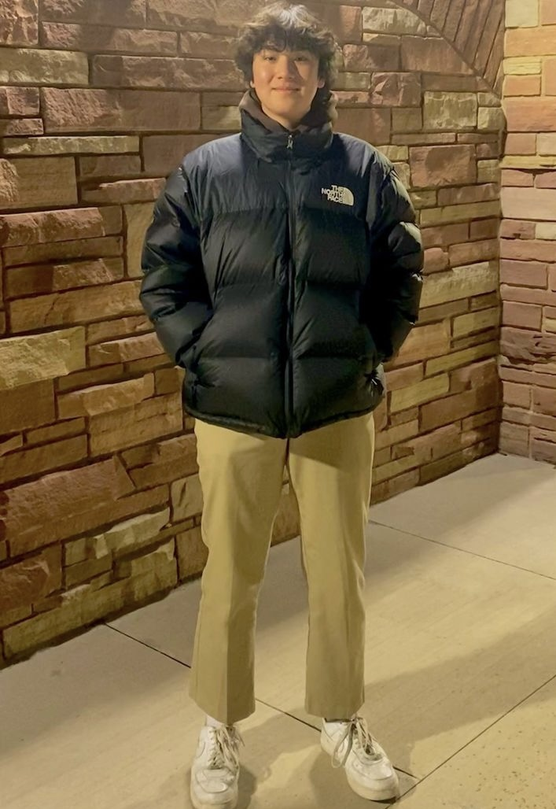

A simpler way to check a username and find related ideas.

Thomas Connell
Information Science · CU Boulder
I’m interested in design, technology, and making things easier to use.
Outside of school, I’m usually skiing, gaming, or working on my PC.
A few things I’ve worked on
Selected work.
Helping students make sense of the options after their degree.